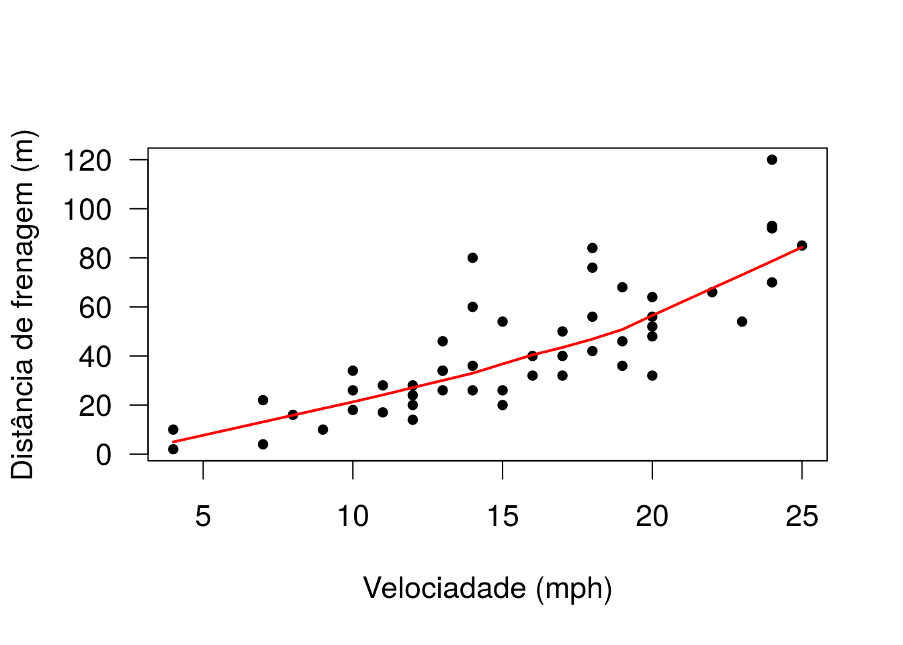

Exemplo - Mínimos quadrados ponderados. Vamos utilizar o data frame cars, disponível na base do R.
Deste pacote vamos usar a função ncvTest, que permite testar a hipótese de variância constante para o erro.
Desse pacote vamos utilizar a função gls, para ajustar um modelo alternativo baseado em mínimos quadrados ponderados.
Consultando a documentação dos dados, para entender as variáveis.
## speed dist
## 1 4 2
## 2 4 10
## 3 7 4
## 4 7 22
## 5 8 16
## 6 9 10
## 7 10 18
## 8 10 26
## 9 10 34
## 10 11 17Visualizando as dez primeiras linhas da base.
## speed dist
## Min. : 4.0 Min. : 2
## 1st Qu.:12.0 1st Qu.: 26
## Median :15.0 Median : 36
## Mean :15.4 Mean : 43
## 3rd Qu.:19.0 3rd Qu.: 56
## Max. :25.0 Max. :120# Extraindo algumas descritivas
par(cex=1.4, las=1)
plot(cars, pch=20, xlab='Velociadade (mph)', ylab='Distância de frenagem (m)')
# Gráfico de dispersão da distância de frenagem em relação à velocidade do veículo.
with(cars, lines(lowess(dist~speed), col='red', lwd=2)) 
Ajustando uma curva de regressão não paramétrica (apenas para verificar melhor a relação entre as variáveis. Não entraremos em detalhes sobre este procedimento agora).
Claramente há uma relação entre as variáveis (a distância de frenagem aumenta conforme a velocidade do veículo). Vamos assumir que a relação entre as variáveis é linear. Fica como exercício para o aluno tentar outras possibilidades, como ajustar um modelo polinomial ou transformar uma das variáveis (ou ambas).
ajuste <- lm(dist ~ speed, data = cars)
# ajuste armazena o modelo de regressão linear ajustado para as duas variáveis.
summary(ajuste) ##
## Call:
## lm(formula = dist ~ speed, data = cars)
##
## Residuals:
## Min 1Q Median 3Q Max
## -29.07 -9.53 -2.27 9.21 43.20
##
## Coefficients:
## Estimate Std. Error t value Pr(>|t|)
## (Intercept) -17.579 6.758 -2.60 0.012 *
## speed 3.932 0.416 9.46 1.5e-12 ***
## ---
## Signif. codes: 0 '***' 0.001 '**' 0.01 '*' 0.05 '.' 0.1 ' ' 1
##
## Residual standard error: 15.4 on 48 degrees of freedom
## Multiple R-squared: 0.651, Adjusted R-squared: 0.644
## F-statistic: 89.6 on 1 and 48 DF, p-value: 1.49e-12Estima-se que a distância de frenagem aumente, em média, aproximadamente 4 metros (3,93) a cada aumento de 1 mph na velocidade do veículo. Na prática, o intercepto não tem interpretação. Por que?
Extraindo os resíduos (padronizados) do ajuste.
par(cex=1.4, las=1, mfrow=c(1,2))
plot(cars$speed, residuos, xlab='Velociadade (mph)', ylab='Resíduos',
pch=20,cex=1.5,ylim=c(-2,3))
# Gráfico de resíduos vs velocidade. Há claros indicativos de que a
# variância dos resíduos aumenta com a velocidade
par(mfrow = c(2,2))## Non-constant Variance Score Test
## Variance formula: ~ fitted.values
## Chisquare = 4.65, Df = 1, p = 0.031A hipótese nula do teste é que a variância dos resíduos é constante em relação à velocidade. O teste fornece evidência significativa de que a variância não é constante (p=0,03).
Vamos considerar que a variância dos resíduos aumente linearmente com a velocidade do veículo, o que nos motiva a usar como pesos 1/velocidade.
ajuste2 <- lm(dist ~ speed, weights=1/speed, data=cars)
# Incorporamos os pesos por meio do argumento "weights".
residuos2 <- rstandard(ajuste2)
plot(cars$speed, residuos2, xlab='Velociadade (mph)', ylab='Resíduos',
pch=20,cex=1.5,ylim=c(-2,3))Repare que o padrão verificado nesse gráfico (de variação não constante para os resíduos) não é evidente se comparado ao primeiro ajuste.
ncvTest(lm(dist~speed, weights=1/speed, data=cars)) O teste de Breusch-Pagan não indica a rejeição da hipótese de variância constante (p=0,32).
##
## Call:
## lm(formula = dist ~ speed, data = cars, weights = 1/speed)
##
## Weighted Residuals:
## Min 1Q Median 3Q Max
## -6.192 -2.914 -0.632 2.412 11.253
##
## Coefficients:
## Estimate Std. Error t value Pr(>|t|)
## (Intercept) -12.967 4.879 -2.66 0.011 *
## speed 3.633 0.345 10.52 4.7e-14 ***
## ---
## Signif. codes: 0 '***' 0.001 '**' 0.01 '*' 0.05 '.' 0.1 ' ' 1
##
## Residual standard error: 3.81 on 48 degrees of freedom
## Multiple R-squared: 0.698, Adjusted R-squared: 0.691
## F-statistic: 111 on 1 and 48 DF, p-value: 4.69e-14## Calls:
## 1: lm(formula = dist ~ speed, data = cars)
## 2: lm(formula = dist ~ speed, data = cars, weights = 1/speed)
##
## Model 1 Model 2
## (Intercept) -17.58 -12.97
## SE 6.76 4.88
##
## speed 3.932 3.633
## SE 0.416 0.345
## A função compareCoefs dispõe lado a lado estimativas e erros padrões de dois ou mais modelos ajustados.
Observe que a estimativa do efeito da velocidade na distância de frenagem é menor (3.63, contra 3.93 no ajuste1), mas seu erro padrão também é menor (0.34, contra 0.41 no ajuste1). De qualquer forma, novamente se verifica relação significativa entre as variáveis.
Vamos considerar agora que a relação entre a variação dos erros e a velocidade seja desconhecida, mas desejamos estimá-la. Uma maneira de fazer isso é assumir uma forma não completamente especificada para essa relação, envolvendo parâmetros, e estimar esses parâmetros juntamente com os demais parâmetros do modelo.
Poderíamos especificar varias funções. Vamos considerar uma, implementada no pacote nlme: DP(Erros)=alpha+velocidade^beta, ou seja, estamos assumindo uma relação do tipo potência, onde alpha e beta são parâmetros a serem estimados.
ajuste3 <- gls(dist ~ speed, data=cars, weight = varConstPower(form =~ speed))
residuos3 <- residuals(ajuste3, type='normalized')
plot(cars$speed,residuos3, xlab='Velociadade (mph)', ylab='Resíduos', pch=20,
cex=1.5, ylim=c(-2,3))## Generalized least squares fit by REML
## Model: dist ~ speed
## Data: cars
## AIC BIC logLik
## 412.8 422.2 -201.4
##
## Variance function:
## Structure: Constant plus power of variance covariate
## Formula: ~speed
## Parameter estimates:
## const power
## 3.160 1.022
##
## Coefficients:
## Value Std.Error t-value p-value
## (Intercept) -11.085 4.052 -2.736 0.0087
## speed 3.484 0.320 10.880 0.0000
##
## Correlation:
## (Intr)
## speed -0.9
##
## Standardized residuals:
## Min Q1 Med Q3 Max
## -1.4521 -0.6898 -0.1308 0.6375 3.0757
##
## Residual standard error: 0.7637
## Degrees of freedom: 50 total; 48 residualObserve que a estimativa da potência (power=1,022) indica relação (aproximandamente) linear entre o desvio padrão dos resíduos e a velocidade, e, consequentemente, quadrática entre a variância dos erros e a velocidade.